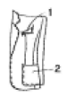
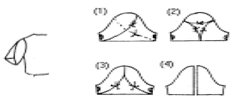
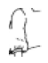
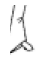
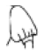
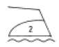
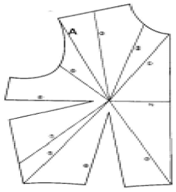
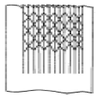
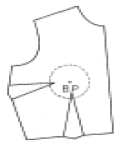
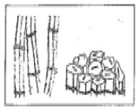

양장기능사 (2005-01-30 기출문제)
1과목: 임의 구분
1. 바늘 땀이 뛰는 이유와 가장 거리가 먼 것은?
- 바늘판에 결함
- 북집 자체에 결함
- 실의 불량
- 톱니에 결함
(정답률: 50%)

2. 재봉틀의 부품 중 천을 앞으로 밀어주는 역할을 하는 것은?
- 아암
- 실채기
- 피이드 독
- 프레셔 푸드
(정답률: 35%)
3. 패턴의 배치방법 중 옳지 못한 것은?
- 패턴은 큰 것부터 배치한다.
- 옷본에 표시된 올의 방향에 맞춘다.
- 무늬가 있는 옷감은 무늬를 맞춘다.
- 긴 털이 있는 옷감은 털의 결방향을 위로 한다.
(정답률: 86%)
4. 아래 디자인에서 1번 포켓의 이름은?

- 플랩 포켓
- 바운드 포켓
- 웰트 포켓
- 인씸 포켓
(정답률: 58%)
5. 의류 패턴 표시기호에서 가는 실선으로 나타내지 아니하는 것은?
- 안단선
- 중심선
- 되접는 선
- 안내선
(정답률: 48%)
6. 그림과 같은 페탈(petal) 소매를 제도한 것으로 맞는 것은?

- (1)번
- (2)번
- (3)번
- (4)번
(정답률: 88%)
7. 제도시 약자로 틀린 것은?
- 허리둘레선 - W.P.
- 엉덩이 둘레선 - H.L.
- 중심선 - C.L.
- 소매산 - S.C.
(정답률: 60%)
8. 한가닥 또는 그 이상의 봉사들이 한가닥 또는 그 이상의 보빈 봉사들과 독립적이거나 서로 결합하여 일정한 간격을 유지하면서 이루어진 환(環, 땀)의 구조는?
- 스티치(stitch)
- 시임(seam)
- 연단(spreading)
- 마킹(marking)
(정답률: 74%)
9. 2장의 겹쳐진 천은 서로 포개어 겹쳐 있고, 이 때의 겹쳐진 양은 땀을 유지시키거나 봉합하는데 충분한 양이 되도록 봉합시킨 시임(seam,솔기)은?
- 수퍼포오즈 시임
- 랩 시임
- 바운드 시임
- 플랫 시임
(정답률: 50%)
10. 공업용 재봉틀 사용하기에서 그 설명이 틀린 것은?
- 밑실감기에서 북을 실감는 축에 끼어 고정시킨다.
- 밑실감기에서 북에 실을 시계방향으로 몇 번 감아 준후 북 누름대를 눌러 고정시킨다.
- 밑실감기에서 실 가이드의 구멍을 앞에서 뒤로 통과 시킨 후 실을 위실 장력조절 나사의 원반사이로 통과 시킨다.
- 밑실끼우기에서 실을 북집의 밑실 장력조절 나사가 있는 틈 사이로 끼워 홈에 잘 놓이게 한다.
(정답률: 58%)
11. 테일러 칼라의 슈우트를 가봉후에 재단해도 되는 것은?
- 소매
- 뒷길
- 앞길
- 안단
(정답률: 81%)
12. 다음 중 퍼프슬리브는 어느 것인가?



(정답률: 80%)
13. 다양한 디자인의 활용을 위한 기본 원형에 들지 않는 것은?
- 길(bodice)
- 소매(sleeve)
- 스커트(skirt)
- 다트(dart)
(정답률: 87%)
14. 어깨너비의 치수를 재는 올바른 방법은?
- 좌우 어깨점과 가슴너비 점을 지나는 라인의 직선거리를 잰다.
- 좌우 어깨점과 목앞점을 지나는 라인을 따라 체표면을 잰다.
- 좌우 어깨점 사이의 체표면에 대어 너비를 잰다.
- 좌우 옆목점을 지나며 좌우 어깨점의 너비를 잰다.
(정답률: 60%)
15. 110㎝ 너비의 옷감으로 긴 소매 블라우스를 만들 때 필요한 옷감의 소요량은?
- (블라우스길이×1.5)+시접(5~7㎝)
- (블라우스길이×2)+시접(10~15㎝)
- (블라우스길이×2)+소매길이+시접(10~20㎝)
- 블라우스길이+소매길이+시접(10~15㎝)
(정답률: 58%)
16. 시착한 후 관찰방법으로 옳지 않는 것은?
- 옷전체의 여유분이 적당한가를 관찰한다.
- 옷전체의 길이는 적당한가를 관찰한다.
- 절개선 위치는 적당한가를 관찰한다.
- 색상이 얼굴에 맞는가를 관찰한다.
(정답률: 88%)
17. 다음 중 원형의 제도법에 대한 설명 중 옳은 것은?
- 장촌식 제도법은 신체 각 부위의 치수를 섬세하게 계측하여 그 치수를 원형으로 표현한다.
- 장촌식 제도법은 각자가 치수를 정확하게 계측하여야만 몸에 잘 맞는 원형이 구성된다.
- 단촌식 제도법은 기준이 되는 큰 치수 몇 항목만을 사용하여 그 치수를 등분하거나 고정치수를 사용한다.
- 장촌식 제도법은 계측이 서투른 초보자에게도 적당한 방법이라고 볼 수 있다.
(정답률: 81%)
18. 다음 중 제조원가에 대한 설명으로 맞는 것은?
- 재료비 : 원자재와 부자재로 나누어진다. 원자재는 안감, 심지, 지퍼, 단추, 봉사 등을 말하고 부자재는 겉감을 말한다.
- 인건비 : 직접인건비와 간접인건비로 나누어진다. 간접인건비는 재료구입, 운반작업, 준비작업에 쓰이는 간접비용만을 말한다.
- 제조원가 : 제조경비는 기업 규모에 상관 없이 일정하다고 볼 수 있다.
- 재료비와 인건비는 직접원가이며 또 제조원가의 기초가 되므로 직접원가를 먼저 산출하고 여기에 제조경비를 합하여 제조원가를 결정한다.
(정답률: 78%)
19. 생산원가 계산에 대한 설명으로 옳지 않은 것은?
- 원단비용은 옷 가격을 계산할 때 가장 중요한 요인이라 할 수 있다.
- 인건비는 옷을 만드는데 필요한 연단, 재단, 봉제, 프레싱, 습식 공정등에 드는 비용을 포함한다.
- 간접비란 옷을 생산하는데 드는 직접 비용과 사업체를 운영하는데 드는 모든 비용을 말한다.
- 부속품 비용은 옷을 생산하는데 필요한 원단 이외의 것을 말한다.
(정답률: 56%)
20. 보기의 다림질 방법(기호) 표시를 바르게 설명한 것은?

- 헝겊을 덮고 온도 140∼160℃정도에서 다림질 한다.
- 일반적으로 온도 160∼180℃정도에서 다림질 한다.
- 온도 90 - 120℃정도에서 다림질 한다.
- 헝겊을 덮고 온도 120 - 140℃정도에서 다림질 한다.
(정답률: 46%)
2과목: 임의 구분
21. 길원형에서 A의 명칭은 무엇인가?

- 숄더다트 (shoulder dart)
- 네크다트 (neck dart)
- 숄더포인트다트 (shoulder point dart)
- 센터프론트다트 (center front dart)
(정답률: 81%)
22. 열가소성의 성질이 있으며 여성용 고급 블라우스나 안감으로 가장 많이 사용하는 섬유는?
- 반합성섬유
- 합성섬유
- 재생섬유
- 천연섬유
(정답률: 57%)
23. 스커트 길이에 따른 명칭으로 길이가 무릎정도 되는 스커트로 기본형 스커트의 길이에 해당되는 스커트는?
- 미디 스커트
- 맥시 스커트
- 내츄럴 라인 스커트
- 풀 렝스 스커트
(정답률: 67%)
24. 목옆점에서 유두점까지의 길이를 재는 측정항목은?
- 앞길이
- 유두간격
- 유두길이(유장)
- 옆길이
(정답률: 78%)
25. 소매길이를 가장 올바르게 재는 방법은?
- 어깨끝점에서 손바닥까지 잰다.
- 팔을 구부린 후 어깨끝점에서 손목점까지 잰다.
- 어깨끝점에서 팔꿈치점을 지나 손목점까지 잰다.
- 옆목점에서 팔꿈치점을 지나 손목점까지 잰다.
(정답률: 79%)
26. 바지의 허벅지 부위가 너무 타이트할 경우에 올바른 보정 방법은?
- 옆선에서 부족한 만큼 내준다.
- 안쪽 가랑이를 남는 만큼 줄여준다.
- 허리선을 올리고 밑아래를 넓힌다.
- 밑아래 시접을 줄여준다.
(정답률: 74%)
27. 다음 그림의 장식봉 이름은?

- 러플
- 스모킹
- 패거팅
- 핀턱
(정답률: 67%)
28. 다음중에서 운동복 솔기로 가장 적당한 것은?
- 박음질
- 쌈솔
- 가름솔
- 접어가름솔
(정답률: 82%)
29. 다음의 바느질법중에서 새발뜨기의 설명은?
- 두꺼운 옷감의 단부분이나 뒤 트임 부분에 많이 사용되는 바느질이고, 쉽게 뜯어지는 것을 방지하는 튼튼한 바느질법이며 장식적인 효과도 있다.
- 스커트, 슬랙스, 소매 등의 밑단부분에 많이 쓰이는 바느질이고 단을 접어서 다린 후에 겉감으로는 바늘땀이 거의 나타나지 않게 하여야 하고 접힌 단 쪽으로 길게 떠준다.
- 밑단 부분이나 안감을 겉감에 고정시킬 때, 지퍼부분에서 안감을 겉감부분에 고정시킬 때 많이 사용하고 옷의 안쪽부분에 사선의 감치기 한 실이 나타나고 겉쪽으로는 실땀이 보이지 않도록 한다.
- 올이 풀리지 않도록 시접의 끝을 꺽어 다린 후 단 분량을 접어 재봉틀로 박아주며 면이나 청바지단 처리에 쓰인다.
(정답률: 55%)
30. 다음 중 옷본에 표시할 사항이 아닌 것은?

- 앞 중심 (C.F)
- 식서방향
- 노치 (notch)
- 사용기간
(정답률: 83%)
31. 아디프산(adipic acid)과 헥사메틸렌디아민의 축합중합에 의해서 이루어지는 나일론은?
- 나일론 6
- 나일론 9
- 나일론 66
- 나일론 610
(정답률: 62%)
32. 폴리프로필렌계 섬유의 특성 중 틀린 것은?
- 비중이 가볍다.
- 내열성이 나쁘다.
- 흡습성이 좋다.
- 강력 및 탄성이 크다.
(정답률: 57%)
33. 드라이클리닝의 장점에 대해서 바르게 말한 것은?
- 세제의 값이 싸고, 설비비가 적게 든다.
- 친수성 오염의 세탁에 효과적이다.
- 의류의 색, 형태가 보존되며, 세탁 후 손질이 간편하다.
- 세탁 방법이 간단하고, 오염물이 깨끗이 제거된다.
(정답률: 85%)
34. 섬유를 불에 태웠을 때 식초냄새가 나는 것은?
- 아세테이트
- 아크릴
- 나일론
- 비닐론
(정답률: 76%)
35. 직물에서 경사(날실) 방향이라고 추측할 수 있는 쪽은?
- 강도는 약하지만 신축성이 큰 쪽
- 실의 밀도가 적은 쪽
- 세탁시 수축이 많이 되는 쪽
- 제직시 장력을 적게 받은 쪽
(정답률: 41%)
36. 다음 중 흡습성이 가장 좋은 섬유는?
- 폴리에스테르
- 아크릴
- 아마
- 나일론
(정답률: 69%)
37. 다음중에서 비중이 가장 적은 섬유는?
- 목화
- 생명주
- 폴리에스테르
- 나일론
(정답률: 46%)
38. 비누의 특성을 설명한 것 중 틀린 것은?
- 가수분해되어 유리지방산을 만든다.
- 알칼리성 용액에서 사용할 수 있다.
- 경수(센물)에 안정하다.
- 원료의 공급에 제한을 받는다.
(정답률: 27%)
39. 다음 그림은 현미경으로 본 섬유의 단면과 측면이다. 섬유명은?

- 아마
- 양모
- 레이온
- 나일론
(정답률: 78%)
40. 현미경으로 섬유의 측면을 관찰할 때 납작한 리본모양의 천연꼬임이 보이는 것은?
- 무명
- 양털
- 아마
- 명주
(정답률: 54%)
3과목: 임의 구분
41. 다음 중 가장 따뜻한 색은?
- 보라색
- 노랑색
- 연두색
- 주황색
(정답률: 58%)
42. 어떤 색으로 테이블보를 만드는 것이 식욕을 돋구어 주는 역할을 하는가?
- 주황색
- 남색
- 흰색
- 연두색
(정답률: 80%)
43. 색채조절에 의한 효과가 아닌 것은?
- 눈의 피로와 긴장감을 준다.
- 사고나 재해를 감소시킨다.
- 능률이 향상되어 생산력이 높아진다.
- 유지관리가 경제적이며 쉽게 된다.
(정답률: 62%)
44. 부티크(Boutique)란?
- 여성의류만 취급하는 점포
- 개성적인 의류와 소품을 취급하는 점포
- 남성복만 취급하는 점포
- 캐쥬얼만 취급하는 점포
(정답률: 67%)
45. 혼색에 대한 설명으로 틀린 내용은?
- 색광혼합을 가법혼색이라 한다.
- 색료혼합을 감산혼합이라 한다.
- 색료혼합 3원색을 다 합치면 흑색이 된다.
- 색광을 혼합하면 할수록 명도와 채도가 낮아진다.
(정답률: 53%)
46. 동시대비에 속하지 않는 것은?
- 명도대비
- 색상대비
- 보색대비
- 계속대비
(정답률: 87%)
47. 옷이 젖었을때가 말랐을때보다 훨씬 무거워 보이는 이유는 다음 중 어느 것에 의한 영향인가?
- 채도
- 명도
- 색상
- 대비
(정답률: 62%)
48. 형태에 있어서 순수형태의 기본 분류가 아닌 것은?
- 점
- 선
- 면
- 형
(정답률: 80%)
49. 다음 중 색을 배색할 때 주의점이 아닌 것은?
- 사용하는 목적과 주위환경을 고려한다.
- 색의 배치나 면적, 비례는 중요하지 않다.
- 색상, 명도, 채도의 변화를 고려하여 조화가 되도록 한다.
- 사용되는 재질과 형체를 고려하여 배색을 미리 계획한다.
(정답률: 93%)
50. 고대로부터 내려온 가장 아름다운 비례의 미적분할방법에 근접한 것은?
- 3 : 8
- 1 : 2
- 1 : 1
- 3 : 5
(정답률: 59%)
51. 다음 중 직물의 조직과 직물명을 바르게 연결한 것은?
- 평직- 공단
- 능직- 사지
- 수자직 - 포플린
- 양면사문직 - 옥양목
(정답률: 63%)
52. 부직포의 특성 중 적당하지 아니한 것은?
- 보온성이 좋다.
- 탄성이 우수하다.
- 표면이 매끄럽다.
- 레질리언스가 우수하다.
(정답률: 70%)
53. 검사 결과 날실(경사)로 판정할 수 있는 것은?
- 견본 직물에 가장자리 부분이 있을 때, 가장자리 실(변사)과 수직을 이루고 있는 실이다.
- 일반적으로 실의 밀도가 적은 쪽의 실이다.
- 견본을 살펴보아, 일반적으로 바르게 배열되어 있는 실이다.
- 외올실(단사)과 여러 올의 합사 직물일 때에는 외올실이다.
(정답률: 50%)
54. 의복의 착용과정에 있어서 직물의 성능을 저하시키는 요인이 아닌 것은?
- 직물의 가격
- 자외선
- 염료의 황변
- 땀 또는 피지
(정답률: 83%)
55. 의복을 착용 중 발생하는 정전기를 방지하기 위한 가공법은?
- 의마가공
- 대전방지가공
- 방화가공
- 방축가공
(정답률: 89%)
56. 직물의 삼원조직이 아닌 것은?
- 평직
- 능직
- 문직
- 수자직
(정답률: 79%)
57. 다음 양털섬유의 불순물 중 관계 없는 것은?
- 울 그리스(wool grease)
- 지방산
- 리그닌
- 스윈트(suint)
(정답률: 30%)
58. 형태안정성, 충해, 피복지의 성능 요구도는 피복지로써 구비하여야 할 성능 중 어느 것에 속하는가?
- 관리적인 성능
- 감각적인 성능
- 실용적인 성능
- 위생상의 성능
(정답률: 74%)
59. 옷감의 보온성과 가장 관계가 깊은 것은?
- 강도
- 함기율
- 투습성
- 내추성
(정답률: 83%)
60. 여러 세탁 방법들에서 세척율을 바르게 나타낸 것은?
- 비벼빨기 ＞ 두드려빨기 ＞ 주물러빨기 ＞ 흔들어빨기
- 비벼빨기 ＞ 두드려빨기 ＞ 흔들어빨기 ＞ 주물러빨기
- 두드려빨기 ＞ 비벼빨기 ＞ 주물러빨기 ＞ 흔들어빨기
- 두드려빨기 ＞ 비벼빨기 ＞ 흔들어빨기 ＞ 주물러빨기
(정답률: 62%)